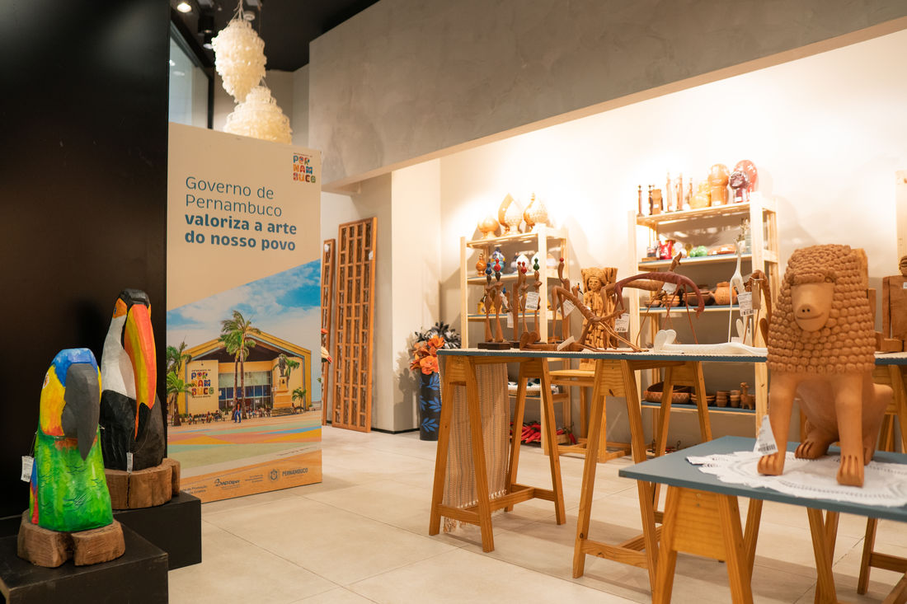

História
riqueza cultural pernambucana está presente nos mais diversos tipos de manifestações artísticas. O artesanato, assim como as artes cênicas, a dança, a música e a literatura, representa a relação do Homem com sua história e tradição. Através das mãos dos nossos artesãos, simples matérias primas e grandes ideias se transformam em verdadeiras obras de arte, registrando o modo de ser e viver do nosso povo. Com criatividade de sobra e uma grande diversidade de referências, a produção artesanal de Pernambuco se revela através das mais variadas expressões. Seja no barro, na madeira, nas fibras e palhas ou no couro, o fazer artesanal é um dos grandes patrimônios do povo pernambucano.
Além de forte característica cultural e grande ligação com setor turístico, o artesanato se tornou, ao longo dos anos, um importante segmento da atividade econômica do Estado. Com a preocupação de transformar a arte em fonte de renda para os artesãos, o Governo do Estado de Pernambuco investe em ações de comercialização do artesanato, através do Programa do Artesanato de Pernambuco (Pape). Atrelado ao PAPE está o Programa do Artesanato Brasileiro de Pernambuco (PAB-PE).
